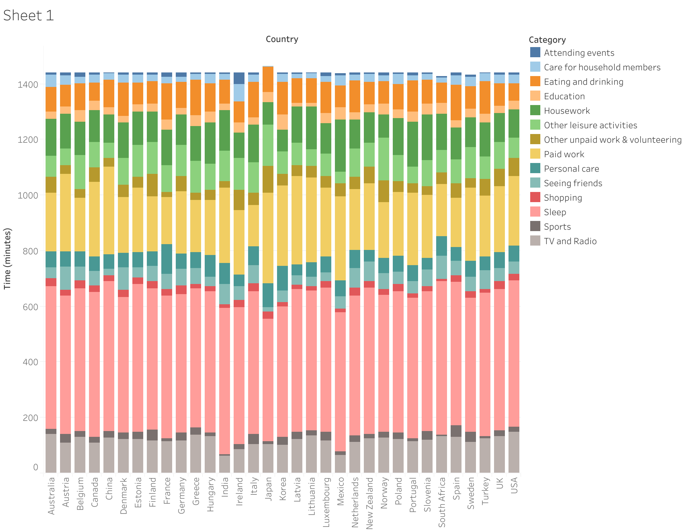
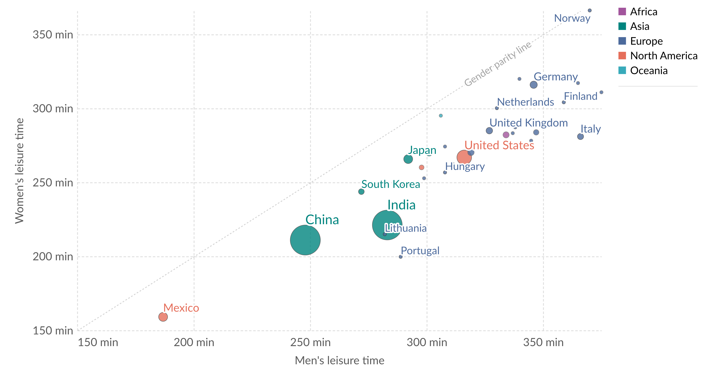
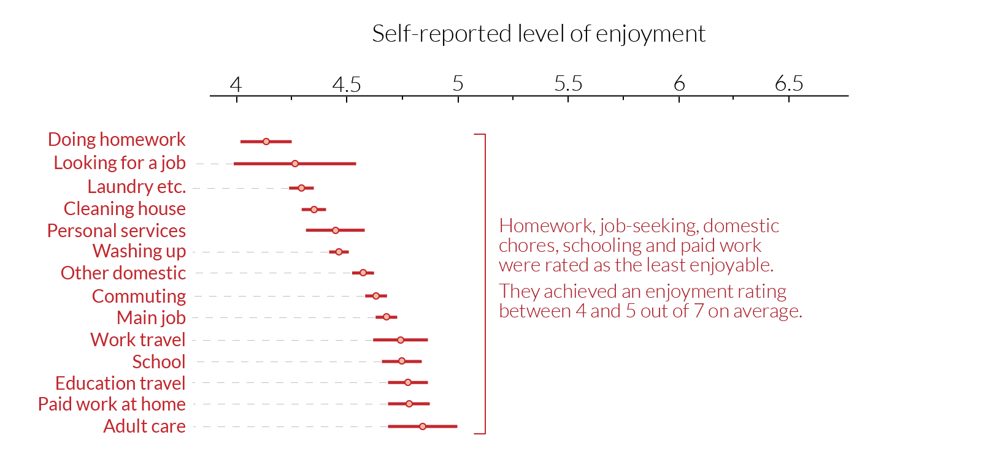
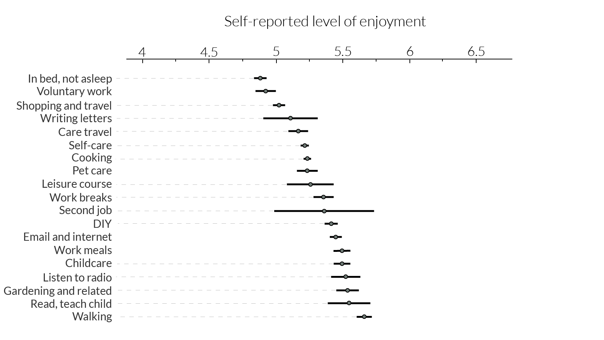
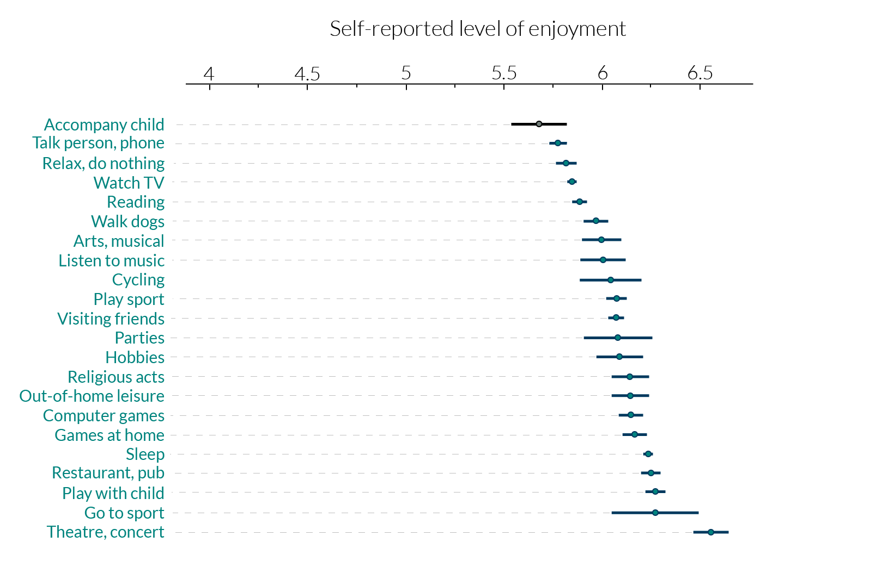

时间是最终的有限资源。
我们每个人都有相同的“时间预算”——每天24小时，每年365天，总共8,760小时——贯穿我们一生的每一年。
我们如何花费时间？全世界有许多共性：我们都需要睡觉、工作、吃饭，并享受休闲时光。但在选择如何利用时间方面，人们的自由度存在显著差异，这直接影响他们最看重的事情。
研究世界各地人们如何利用时间，为我们理解生活条件、经济机会和整体幸福感提供了一个重要视角。在本文中，我呈现了关于人们如何使用时间的数据，探讨了这种使用方式在各国之间及时间维度上的差异，以及这些差异对人们生活的影响。
在本文中，我呈现了关于人们如何使用时间的数据，探讨了这种使用方式在各国之间及时间维度上的差异，以及这些差异对人们生活的影响。
从日常平均时间使用的角度来看
睡觉、工作、吃饭、休闲——从高层次来看，大多数人都将时间花在类似的活动上。但世界各地人们的日常活动究竟有多相似呢？
这是一个值得思考的问题，不仅仅是为了满足我们的好奇心，还因为时间使用方式的差异为我们提供了关于生活条件、经济机会和整体幸福感的重要视角.
我们一起探讨跨国时间使用调查中呈现的一些关键模式，然后深入分析这些差异如何影响人们的幸福感.
这些数据来自经济合作与发展组织（OECD），综合了时间日记和一般问卷的估算结果。时间日记要求受访者记录某一天的活动顺序，而一般问卷则要求受访者回忆上一周中某一天在不同活动上花费的时间。

Data source: OECD Time Use Database, Gender Data Portal
从这张图表中首先可以看出，各国之间确实存在许多相似之处。
这并不令人意外——大多数人都试图将一天分为“工作、休息和娱乐”三个部分，因此存在一些可预测的模式。我们在工作和睡觉上花费最多的时间。工作、家务、休闲、吃饭和睡觉这五项活动总共占据了一天中1440分钟的80-90%。
工作是一个显著存在差异的活动。图表中的国家按照有偿工作时间从高到低排序。在平均一天中，中国和墨西哥的人在有偿工作上花费的时间几乎是意大利和法国人的两倍。这是一个普遍规律：更富裕国家的人往往能少工作一些。需要注意的是，这张图表展示的是15至64岁工作年龄段所有人的平均数据，无论他们是否在就业。
人口结构、教育水平和经济繁荣程度的差异都导致了工作和时间使用方面的不平等。
但从图表中可以清楚地看出，一些时间使用的差异无法简单地用经济或人口差异来解释。例如，在英国，人们花在工作的时间比法国多，但在这两个国家，人们报告的休闲时间却相似。
文化差异可能在其中起到了一定作用。例如，法国人似乎在吃饭上花费的时间远多于英国人——在这一点上，数据也符合关于饮食文化的刻板印象。法国、希腊、意大利和西班牙的人报告称，他们在吃饭上花费的时间比大多数其他欧洲国家的人更多。而花在吃饭和喝饮料上时间最少的国家是美国。
超越平均值：闲暇时间的性别差距
超越国家平均值，可以揭示各国内部的重要不平等。例如，闲暇时间的性别差距是一个显著存在巨大不平等的维度。
这里的图表基于上述相同的时间使用数据，但分别显示了男性和女性的总闲暇时间。
男性的闲暇时间显示在水平轴上，而女性的闲暇时间显示在垂直轴上。虚线对角线表示“性别平等”，因此一个国家离对角线越远，男女之间的差异就越大。

Source:
http://www.oecd.org/gender/data/balancingpaidworkunpaidworkandleisure.html
http://www.oecd.org/gender/data/OECD_1564_TUSupdatePortal.xlsx
http://www.oecd.org/gender/data/balancingpaidworkunpaidworkandleisure.htm http://www.oecd.org/gender/data/OECD_1564_TUSupdatePortal.xlsx
正如我们所看到的，在所有国家中，男性的平均闲暇时间都比女性更长——所有数据点都位于对角线的下方——但在某些国家，这种差距要大得多。例如，在挪威，差距非常小，而在葡萄牙，男性报告的闲暇时间明显多于女性
造成闲暇时间差异的一个关键因素是无偿工作的性别差距。数据显示，女性承担了不成比例的大量无偿工作，因此闲暇时间更少
为什么我们应该关注时间使用的差异？
我们每个人都有相同的“时间预算”：每天24小时，每年365天。但显然，并不是所有人都能选择将时间花在自己最喜欢的活动上。
我们在将时间分配到自己喜欢的活动上的自由度差异，是时间使用数据对于研究生活条件的重要原因之一。
在英国，来自时间使用研究中心（Centre for Time Use Research）的研究人员将时间使用日记与受访者对活动享受程度的评分（从1到7）联系起来，以更好地理解时间使用与幸福感之间的关系。
这里的图表改编自乔纳森·格什尼（Jonathan Gershuny）和奥里尔·沙利文（Oriel Sullivan）教授所著的《我们每天真正做了什么》（What We Really Do All Day）一书。估算值对应每项活动的平均享受水平，并显示了置信区间。

求职、家务、上学和有偿工作被评为最不愉快的活动。在满分 7 分的情况下，它们的平均愉快度在 4 分至 5 分之间。

“第二工作 "在享受评分方面的差异最大。这可能反映了选择从事第二份工作的人与不得不从事第二份工作的人之间的差异。

体育运动、音乐会、游戏、会见朋友和家人以及业余爱好等休闲活动被评为最愉快的活动。
Source: Jonathan Gershuny and Oriel Sullivan (2019). What We Really Do All Day: Insights from the Centre for Time Use Research.
我们可以看到，最受欢迎的活动通常是与休息或休闲相关的活动——比如外出就餐、睡觉、观看体育赛事、玩电脑游戏或参加文化表演。而评分最低的活动包括做学校作业、找工作或做家务。
在人们享受程度差异最大的活动是从事“第二份工作”。这可能反映了两种人之间的区别：一部分人因为想要而从事第二份工作，另一部分人则因为不得不工作而做出选择。
那么，我们从中学到了什么？
首先，我们了解到，活动的享受程度在一定程度上是可预测和稳定的。这意味着我们可以将活动分组，并在不同人群之间进行有意义的比较。例如，经济学家通常将任何享受程度低于工作的活动分类为“非休闲活动”，以衡量不同人群和时间段的休闲趋势。
这进一步证明了时间使用数据对于衡量幸福感具有重要意义。
活动享受程度中存在清晰且可预测的模式，这表明时间使用的差异确实为我们提供了关于生活条件和经济机会的重要视角。在那些人们从事更多有偿和无偿工作的国家，休闲时间较少，他们的享受程度——以及幸福感和生活满意度——可能会更低。
从生命周期的角度看时间使用
随着我们的人生进程，我们会与不同的人建立个人关系——家庭、朋友、同事、伴侣。
这些对我们每个人都至关重要的关系会随着时间而演变。随着年龄的增长，我们建立新的关系，同时一些旧的关系可能会转变或淡化；而到了生命的晚期，许多人会花更多的时间独处。
从整个生命历程的大局来看：我们实际上是与谁一起度过时间的？
这里的图表展示了美国不同年龄段的人们报告与他人相处时间的情况。
这些数据来自时间使用调查，在调查中，人们被要求列出一天中所进行的所有活动，以及每项活动中与他们在一起的人。
American Time Use Survey (2009-2019) and Lindberg (2017)
https://www.bls.gov/tus/datafiles-0319.htm
https://www.bls.gov/tus/datafiles-0319.htm
我们与谁共度时间在一生中变化很大
年轻时——尤其是十几岁时——我们大部分时间都与朋友、父母、兄弟姐妹以及其他亲戚在一起。
进入二十多岁后，与朋友、兄弟姐妹和父母共度的时间开始迅速减少。取而代之的是，与伴侣和孩子在一起的时间逐渐增加。图表展示的是美国人的平均情况，因此对于有孩子的人来说，与孩子共度的时间实际上会更多，因为那些没有孩子的人会拉低平均值。
正如图表所示，这种趋势在三十多岁、四十多岁和五十多岁时继续延续——在这个人生阶段，美国人将大量时间花在伴侣、孩子以及（不出意外地）同事身上。
对于60岁及以上的人群，与同事共度的时间显著减少。这是可以理解的，因为许多美国人在60多岁时开始退休。而减少的这部分时间，部分被更多与伴侣共度的时间所取代。
那么，我们互动的人数如何变化呢？图表显示，与我们互动的人数在40岁左右达到峰值，但随后发生了显著变化。这可能是图表中最显著的趋势：40岁以后，人们独处的时间逐渐增加。
老年人花费大量时间独处
老年人花费大量时间独处，这是可以理解的——随着年龄的增长，独处的时间增加，因为健康状况通常会恶化，人们会失去亲人和朋友。
事实上，正如图表所示，许多60岁以上的人独自生活。这在老年人中尤为常见。
另一个有趣的点是，各个年龄段独居人口的比例随着时间的推移不断上升。
American Time Use Survey (2009-2019) and Lindberg (2017)
Data source: https://doi.org/10.18128/D010.V8.0
数据显示，随着年龄的增长，我们独处的时间会越来越多。不仅如此，数据还显示，当今的老年人比过去的老年人花费更多时间独处。
然而，我们可能会认为老年人因此更孤独——但事实并非一定如此。
独处并不等同于感到孤独。这一点得到了研究人员的广泛认可，并且在各国的实证研究中得到了验证。调查显示，在询问人们的居住状况、时间使用和孤独感时，单纯的独处并不是孤独感的良好预测指标。
事实上，根据一项基于长期追踪调查的研究发现，从50岁开始——这是参与者的最低年龄——孤独感呈下降趋势，直到大约75岁后才开始再次上升。
综合这些证据，我们得出的结论不是要对衰老的前景感到悲伤，而是要认识到社会联系的复杂性。
我们经常将与他人共度的时间量作为衡量社会幸福感的标准——但与他人共度时间的质量以及我们的期望，对我们的联系感和孤独感的影响更为重要。